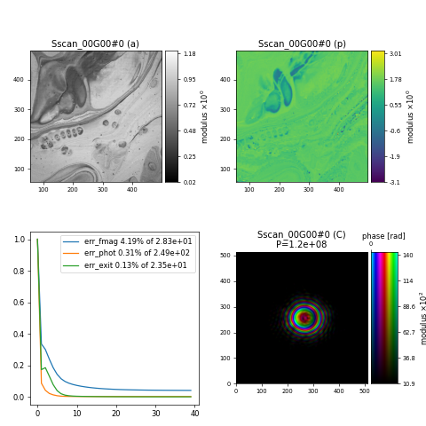

20. Simulating Data#
Learning how to use PtyPy as a Simulator for ptychography experiments.
When developing new algorithms for ptychography or engine features in PtyPy it can be very useful to test ideas on simulated data. This example shows how to simulate ptychographic data and then run a reconstruction on them.
20.1. The data#
For the simulation, we can use an image of a painting for the object and a real probe from the I08-1 instrument
{kind=link}
path_to_probe = "small_data/dls_i08_nanogold_recon.ptyr"
path_to_image = "small_data/painting.jpg"
sim_probe = os.path.join(tutorial_data_home, path_to_probe)
sim_image = os.path.join(tutorial_data_home, path_to_image)
20.2. Simulation#
Instead of providing a PtyScan class like "Hdf5Loader", we can now use the SimScan class
p.scans.scan_00.data = u.Param()
p.scans.scan_00.data.name = 'SimScan'
p.scans.scan_00.data.energy = 0.7
p.scans.scan_00.data.distance = 0.072
p.scans.scan_00.data.psize = 22e-6
p.scans.scan_00.data.shape = 512
and provide reasonable values for energy, distance, psize and the shape of the diffraction patterns. We also need to specify some scanning parameters
p.scans.scan_00.data.xy = u.Param()
p.scans.scan_00.data.xy.model = "raster"
p.scans.scan_00.data.xy.spacing = 50e-9
p.scans.scan_00.data.xy.steps = 10
and the illumination
p.scans.scan_00.data.illumination = u.Param()
p.scans.scan_00.data.illumination.model = "recon"
p.scans.scan_00.data.illumination.recon = u.Param()
p.scans.scan_00.data.illumination.recon.rfile = sim_probe
p.scans.scan_00.data.illumination.photons = 1e11
p.scans.scan_00.data.illumination.aperture = None
p.scans.scan_00.data.illumination.propagation = u.Param()
p.scans.scan_00.data.illumination.propagation.parallel = 50e-6
and object
p.scans.scan_00.data.sample = u.Param()
p.scans.scan_00.data.sample.model = u.rgb2complex(np.array(u.imload(sim_image)))
p.scans.scan_00.data.sample.process = u.Param()
p.scans.scan_00.data.sample.process.offset = (0,200)
p.scans.scan_00.data.sample.process.zoom = 0.5
p.scans.scan_00.data.sample.process.formula = None
p.scans.scan_00.data.sample.process.density = None
p.scans.scan_00.data.sample.process.thickness = None
p.scans.scan_00.data.sample.process.ref_index = None
p.scans.scan_00.data.sample.process.smoothing = None
p.scans.scan_00.data.sample.fill = 1.0+0.j
as well as detector parameters
p.scans.scan_00.data.detector = u.Param()
p.scans.scan_00.data.detector.dtype = np.uint32
p.scans.scan_00.data.detector.full_well = 2**32-1
p.scans.scan_00.data.detector.psf = None
p.scans.scan_00.data.plot = False
to be used for simulating the diffraction data.
20.3. The initial probe#
To make the reconstruction easy, we can initial the probe for the reconstruction with the same probe that was used for the simulation
p.scans.scan_00.illumination = u.Param()
p.scans.scan_00.illumination.model = "recon"
p.scans.scan_00.illumination.recon = u.Param()
p.scans.scan_00.illumination.recon.rfile = sim_probe
p.scans.scan_00.illumination.photons = None
p.scans.scan_00.illumination.aperture = None
p.scans.scan_00.illumination.propagation = u.Param()
p.scans.scan_00.illumination.propagation.parallel = 50e-6
20.4. Reconstruction engine#
For the reconstruction, we can just use DM with standard set of parameters
p.engines = u.Param()
p.engines.engine = u.Param()
p.engines.engine.name = 'DM'
p.engines.engine.numiter = 40
p.engines.engine.numiter_contiguous = 1
p.engines.engine.alpha = 0.9
p.engines.engine.probe_support = None
p.engines.engine.probe_update_start = 0
given the following result after 40 iterations

import ptypy
import ptypy.utils as u
import os
import numpy as np
# Root directory of tutorial data
tutorial_data_home = "../../data/"
# Probe/object to be used for simulation
path_to_probe = "small_data/dls_i08_nanogold_recon.ptyr"
path_to_image = "small_data/painting.jpg"
sim_probe = os.path.join(tutorial_data_home, path_to_probe)
sim_image = os.path.join(tutorial_data_home, path_to_image)
# Create parameter tree
p = u.Param()
# Set verbose level, can be "interactive", "info" or "debug"
p.verbose_level = "interactive"
# Basic I/O settings (no files saved in this case)
p.io = u.Param()
p.io.rfile = None
p.io.autosave = u.Param(active=False)
p.io.interaction = u.Param(active=False)
# Live-plotting during the reconstruction
p.io.autoplot = u.Param()
p.io.autoplot.active = True
p.io.autoplot.threaded = False
p.io.autoplot.layout = "jupyter"
p.io.autoplot.interval = 10
# Scan model
p.scans = u.Param()
p.scans.scan_00 = u.Param()
p.scans.scan_00.name = 'BlockFull'
p.scans.scan_00.coherence = u.Param()
p.scans.scan_00.coherence.num_probe_modes=1
# Scan data (simulation) parameters
# using typical values for I08-1 instrument
p.scans.scan_00.data = u.Param()
p.scans.scan_00.data.name = 'SimScan'
p.scans.scan_00.data.energy = 0.7
p.scans.scan_00.data.distance = 0.072
p.scans.scan_00.data.psize = 22e-6
p.scans.scan_00.data.shape = 512
# Scanning parameters
p.scans.scan_00.data.xy = u.Param()
p.scans.scan_00.data.xy.model = "raster"
p.scans.scan_00.data.xy.spacing = 50e-9
p.scans.scan_00.data.xy.steps = 10
# Illumination to be used for simulation
p.scans.scan_00.data.illumination = u.Param()
p.scans.scan_00.data.illumination.model = "recon"
p.scans.scan_00.data.illumination.recon = u.Param()
p.scans.scan_00.data.illumination.recon.rfile = sim_probe
p.scans.scan_00.data.illumination.photons = 1e11
p.scans.scan_00.data.illumination.aperture = None
p.scans.scan_00.data.illumination.propagation = u.Param()
p.scans.scan_00.data.illumination.propagation.parallel = 50e-6
# Object to be used for simulation
p.scans.scan_00.data.sample = u.Param()
p.scans.scan_00.data.sample.model = u.rgb2complex(np.array(u.imload(sim_image)))
p.scans.scan_00.data.sample.process = u.Param()
p.scans.scan_00.data.sample.process.offset = (0,200)
p.scans.scan_00.data.sample.process.zoom = 0.5
p.scans.scan_00.data.sample.process.formula = None
p.scans.scan_00.data.sample.process.density = None
p.scans.scan_00.data.sample.process.thickness = None
p.scans.scan_00.data.sample.process.ref_index = None
p.scans.scan_00.data.sample.process.smoothing = None
p.scans.scan_00.data.sample.fill = 1.0+0.j
# Detector parameters
p.scans.scan_00.data.detector = u.Param()
p.scans.scan_00.data.detector.dtype = np.uint32
p.scans.scan_00.data.detector.full_well = 2**32-1
p.scans.scan_00.data.detector.psf = None
p.scans.scan_00.data.plot = False
# Initial illumination for reconstruction
p.scans.scan_00.illumination = u.Param()
p.scans.scan_00.illumination.model = "recon"
p.scans.scan_00.illumination.recon = u.Param()
p.scans.scan_00.illumination.recon.rfile = sim_probe
p.scans.scan_00.illumination.photons = None
p.scans.scan_00.illumination.aperture = None
p.scans.scan_00.illumination.propagation = u.Param()
p.scans.scan_00.illumination.propagation.parallel = 50e-6
# Reconstruction parameters
p.engines = u.Param()
p.engines.engine = u.Param()
p.engines.engine.name = 'DM'
p.engines.engine.numiter = 40
p.engines.engine.numiter_contiguous = 1
p.engines.engine.alpha = 0.9
p.engines.engine.probe_support = None
p.engines.engine.probe_update_start = 0
P = ptypy.core.Ptycho(p, level=5)